Table of Contents
- 14.1. The definition of linear graphs
- 14.2. Specifying and formatting the overall displayed graph
- 14.3. Adjusting the look and feel of the plot area
- 14.4. Adjusting the position and layout of the legend
- 14.5. Other formatting options of the axis
- 14.6. Using multiple y-axis
- 14.7. Understanding and using different scales on the axis
- 14.8. Adjusting the appearance of the scale labels
- 14.8.1. Adjusting the position
- 14.8.2. Adjusting font and color
- 14.8.3. Adjusting the background of the labels
- 14.8.4. Hiding and rotating labels
- 14.8.5. Fine tuning the automatic scales
- 14.8.6. Manually altering the appearance of tick marks
- 14.8.7. Manually specifying scale labels
- 14.8.8. Emphasize of parts of the scale
- 14.8.9. Adding static lines for specific scale values in the graph
- 14.9. Using a logarithmic scale
- 14.10. Using a date/time scale
- 14.10.1. Specifying the input data
- 14.10.2. Adjusting the start and end date alignment
- 14.10.3. Manually adjusting the ticks
- 14.10.4. Adjusting the label format
- 14.10.5. Adjusting the automatic density of date labels
- 14.10.6. Creating a date/time scale with a manual label call-back
- 14.10.7. Using the "DateScaleUtils" class to make manual date scale
- 14.10.8. When to use manual and when to use automatic date scale?
- 14.11. Adding shearing image transformation to the graph
- 14.12. Rotating graphs
- 14.13. Using anti-aliasing in the graph generation
- 14.14. Adding icons (and small images) to the graph
- 14.15. Adding images and country flags to the background of the graph
- 14.16. Using background gradients
- 14.17. Adding arbitrary texts to the graph
With cartesian graphs we refer to all plots which have orthogonal x and y axis. The library support the option of multiple y-scales (when applicable) but only on x-axis can be used.
The following principle linear graph types are supported as of v2.5 (note that some graph types may have additional subtypes that are not shown in this overview.)
Figure 14.1. Supported principle linear graph types in the library
|
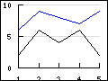 a) Line plot (See Creating a line graph) |
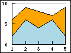 b) Area plot |
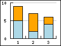 c) Bar plot (See Bar graphs) |
|
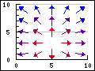 a) Field plot (See Field plots) |
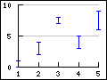 b) Error plot (See Error plot graphs) |
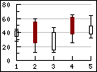 c) Stock plot (See Stock graphs) |
|
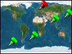 a) Geo-map plot (See Creating Geo-maps) |
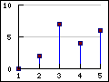 b) Impuls (stem) plot (See Scatter graphs) |
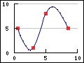 c) Spline plot |
|
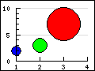 a) Balloon plot (See Balloon plots) |
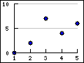 b) Scatter plot (See Scatter graphs) |
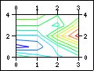 c) Contour plot (See Contour graphs ) |
Each of these graph types have there own section where more details can be found by following the link under the corresponding graph icon.
The x and y axis each in a graph has an associated scale, labels, titles, grid lines, colors and position. The axis properties are accessed as objects of the axis instance variables in the main graph class. The axis can be access vi the following instance variables.
-
Graph::xaxis, The x-axis, (by default on the bottom) -
Graph::yaxis, The y-axis, (by default on the left side) -
Graph::y2axis, The second y-axis (by default on the right side)
In addition the library also supports the use of multiple y-axis and they are accessed via an instance array
-
Graph::ynaxis[]
All axis in turn are instances of class Axis and hence share
common properties. The only two property that can be publicly accessed on the
axis are
-
Axis::scale. The scale of the axis. An instance of eitherLinearScale,LogScaleorDateScale. This rarely needs to be accessed directly. -
Axis::title. The axis title. On the x-axis this is horizontal by default and on the y-axis the title is vertical by default
On the other hand there are a large amount of methods that can be used on the axis to adjust various properties. Some examples of commonly used methods are given below. The full description of each method is given in the API reference.
-
Adjusting the labels
-
Axis::SetLabelFormatString($aFormStr,$aDateFormat=false). Specifies the labels format string assumingprintf()format if$aDateis false and indate()format if$aDateis true. -
Axis::SetLabelFormatCallback($aCallbackFunc) -
Axis::SetLabelAlign($aHorAlign, $aVertAlign='top',$aParagraphAlign='left') -
Axis::HideLabels($aHide=true) -
Axis::SetTicklabels($aLabels, $aLabelColors=null) -
Axis::SetLabelMargin($aMargin) -
Axis::SetLabelSide($aSide) -
Axis::SetFont($aFamily,$aStyle=FS_NORMAL,$aSize=10) -
Axis::SetLabelAngle($aAngle). Species the angle of the label. Note: It is only possible to use arbitrary angles if the font is a true type font. The built in bit map fonts only supports 0 and 90 degree text strings.
-
-
Adjusting the tick marks
-
Axis::SetTickSide($aSide) -
Axis::SetTickPositions($aMajPos,$aMinPos=NULL,$aLabels=NULL) -
Axis::HideTicks($aHide)
-
-
Adjusting the actual axis
-
Axis::HideLine($aHide=true), ONly hide the axis but whos the labels -
Axis::Hide($aHide), Hide both axis and labels -
Axis::SetWeight($aWeight), Set the weight in pixels of the axis -
Axis::SetPos($aPositionOnOtherScale)Specifies the position of the axis on the other scale. The position is given the scale of the other axis. There are two special values (strings) that can be given and those are-
'min'- Will position the axis at the minimum value of the other scale -
'max'- Will position the axis at the maximum value of the other scale
-
-
-
Adjusting the title
-
Axis::SetTitle($aTxt) -
Axis::SetTitleMargin($aMargin) -
Axis::SetTitleSide($aSide) -
Axis::SetColor($aColor,$aLabelColor)
-
The above methods are valid for all possible axis. So for example the following line sets the font for the labels on the x-axis
1 | $graph->xaxis->SetFont(FF_ARIAL,FS_NORMAL,12); |
and the follwing code set the font for the y-axis
1 | $graph->yaxis->SetFont(FF_ARIAL,FS_NORMAL,12); |
The two major ways to adjust the look and feel of the axis are adjustments of the color and the weight (i.e. width) and this can be done with the appropriate methods as described above.
-
Axis::SetColor($aColor,$aLabelColor), For example$graph->xaxis->SetColor('teal'). Please note that by default the color for the labels will be that of the line if the label color is not explicitly specified. -
Axis::SetWeight($aWeight). Specify the weight (in pixels of the axis)
Note
The possibility of a having different styles, colors and weight for minor and major grid lines was added in 3.0.4 and is not available in earlier releases.
Grid lines will make it easier to see where the data points are in the graph.
The grid lines are access by the properties "xgrid" and
"ygrid"of the Graph class. By default only the y-axis grid are
enabled by default. The following code example enables the major grids for both
the x- and y-axis.
1 2 | $graph_>xgrid->Show();
$graph->ygrid->Show(); |
The grid lines are instances of Class Grid. and supports the
following methods
-
Grid::SetColor($aMajColor,$aMinColor=false). Specify the color for the major an minor grid lines -
Grid::SetWeight($aMajorWeight,$aMinorWeight=1). Specify the weight of the line for the major and minor grid line -
Grid::Show($aMajGid=true,$aMinGrid=false). Determine which grid lines should be shown -
Grid::SetLineStyle($aMajorType,$aMinorType)This method makes it possible to adjust the line style of the grid lines (both major and minor separately). The line style is specified as a string and can have one of the following values-
"solid" -
"dotted" -
"dashed" -
"longdashed"
-
-
Grid::SetFill($aFlg=true,$aColor1='lightgray',$aColor2='lightblue')
The last method needs an explanation. The fill refers to the possibility to
fill the space between the grid lines with alternating colors as specified in
the method call. Figure 14.2. Using alternating fill colors in the grid ( shows an example on how
this can be used to make it easier to read a plot.filledgridex1.php)
In the above example we have also used the possibility of using alpha-blending (for example on the shadow on the legend box).
The example below shows how to use different styles for the major and minor grid lines

In order to make it easier to setup a couple of typical axis configuration used in science plots there are four predefined configurations as shown in Figure 14.4. Predefined scientific axis positions .
Figure 14.4. Predefined scientific axis positions
|
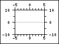
|
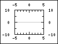
|
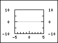
|
 |
AXSTYLE_BOXOUT | AXSTYLE_BOXIN | AXSTYLE_YBOXIN | AXSTYLE_YBOXOUT |
The styles can easily be setup with a call to the method
-
Graph::SetAxisStyle($aStyle)
An example of using this setup of the axis is shown in Figure 14.5. Example of AXSTYLE_BOXIN axis style ( funcex2.php)
The axis can be manually positioned with a call to
Axis::SetPos($aPos)
The argument $aPos is normally the coordinate position on the
"other" axis where the crossing of this and the other axis should be. There are
also two special positions which are given as strings. They are
'min' and 'max'. Not surprisingly these special
positions will always refer to the min and max scale value of the other
axis.
The position given is the scale position on the "other"axis, i.e. for the x-axis the position specifies the crossing of the y-axis and vice versa.
Since it is possible to manually specify all aspects of the axis the table below shows some typical common setups and the principle calls needed to achieve the illustrated affect.
Table 14.1. Axis configurations
|
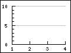 |
This is the default setup and not extra configurations are needed and it is the same as
| ||
|
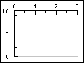 |
This setup is configured by moving the x-axis to the top
| ||
|
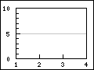 |
This is the standard style but with an added box around the plot area.
| ||
|
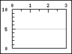 |
| ||
|
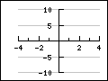 |
This configuration locks the x- and y-axis at the origin
| ||
|
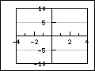 |
With an added box around the plot area
|